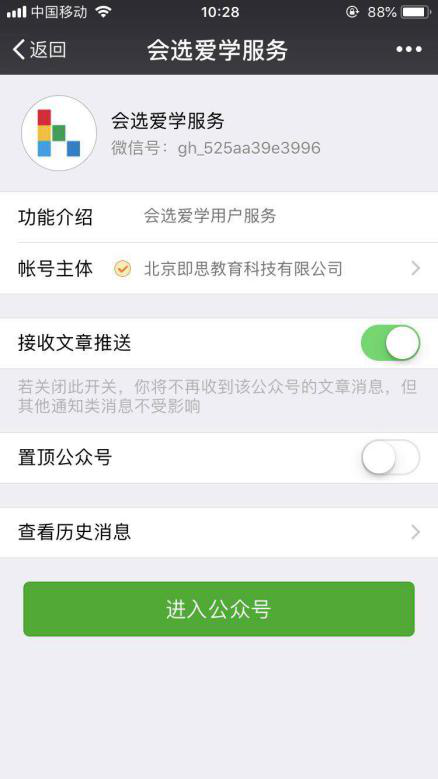
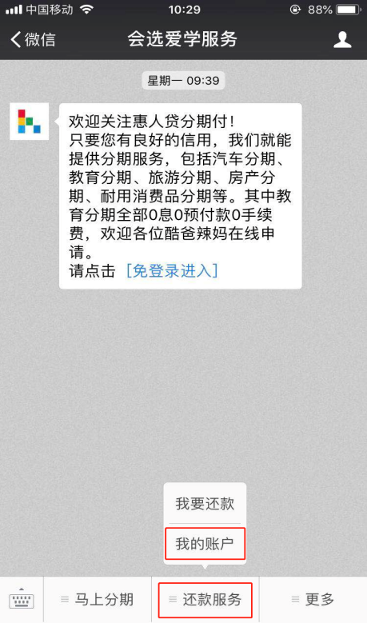
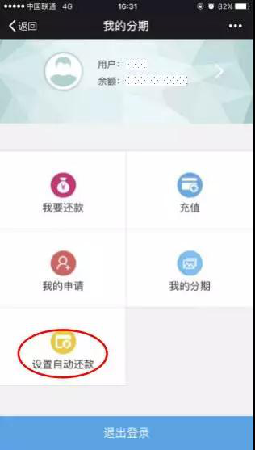
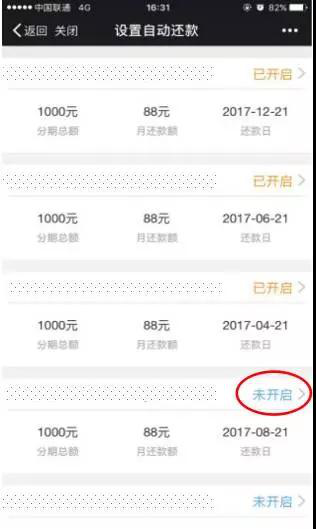
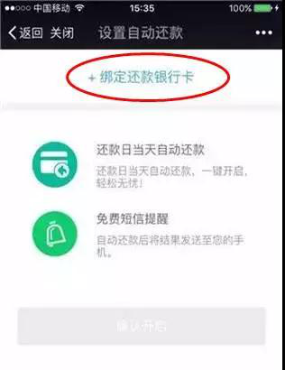
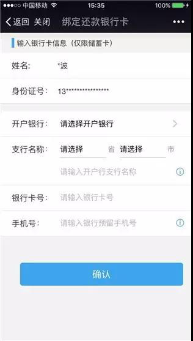
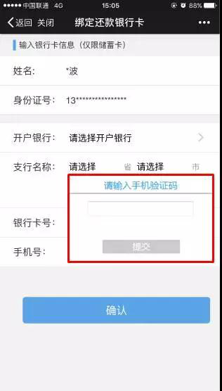
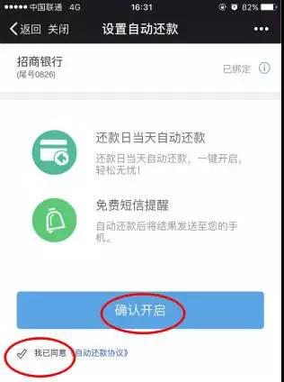
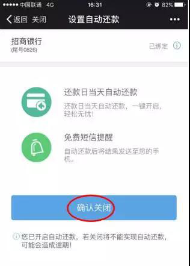

1.在微信“添加朋友”里面搜索”会选爱学服务“，并关注；
2.关注后点击下面的“还款服务”，选“我的账户”，进入“我的分期”页面；点击“设置自动还款”；
 3.进入“设置自动还款”页面，如显示“已开启”即表明目前状态为已开启自动还款模式。如显示“未开启”即点击"未开启"状态改变；
4.进入“设置自动还款”下一页面，点“绑定还款银行卡”。请配合使用目前指定银行银行卡：深圳平安银行、中国银行、广发银行、中国建设银行、中国工商银行、兴业银行；
5.进入“绑定还款银行卡”页面，输入银行卡信息，（请确定好所使用的银行卡信息为本人实名认证的，且申请手机号为改银行卡的预留手机号）点“确认”。
6.在“请输入手机验证码”位置输入验证码，再点“提交”；
7.绑卡完毕，勾选“我已同意《自动还款协议》”，点击“确认开启”
8.若想关闭自动还款功能，点击“设置自动还款”，进入“设置自动还款”页面，点击“已开启”，进入下一页面，直接点击“确认关闭”。
“如果您不会操作还款，或者忘记如何还款，可以联系我们的客服400 022 0898，希望可以帮到您！